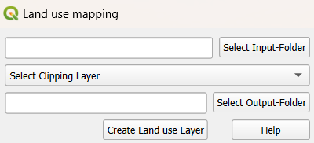
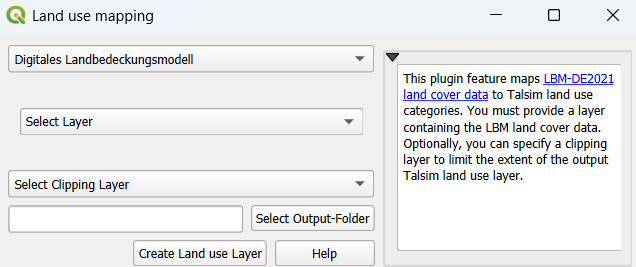

Land use mapping¶
This plugin feature offers the functionality to map land use datasets to Talsim land use categories. This plugin currently supports two German data sources:
ATKIS - Automatisiertes Topographisch-Kartographisches Informationssystem (e.g. ATKIS NRW)
LBM-DE (2021) - Digitales Landbedeckungsmodell für Deutschland, Stand 2021
Executing the Plugin¶
ATKIS Data¶
Input Requirements:
Provide a folder containing all relevant ATKIS layers (e.g.,
veg01_f,sie01_f, etc.)Processing:
Plugin automatically detects and merges necessary files into a single land use layer
Optional: Specify a clipping layer to limit the spatial extent
Maps the ATKIS land use types to Talsim-compatible categories using the fields “OBJART_TXT”, “FKT”, and “VEG”. Find the complete ATKIS to Talsim mapping table here.

LBM-DE (2021) Data¶
Input Requirements:
Download data from the link above and add the layer to your current QGIS project
Processing:
Specify the layer containing LBM data
Optional: Apply a clipping layer to limit the input extent
Mapping uses fields “LB_AKT” (land cover type) and “SIE_AKT” (imperviousness). Find the complete LBM to Talsim mapping table here.

Output Results¶
The output is a GeoPackage containing two land use layers:
One layer with all land use polygons, where the mapped Talsim land use type is stored in the column “OBJART_NEU”.
A second, dissolved layer where polygons with the same land use type are aggregated. This layer can be used as input for the HRU Calculation.